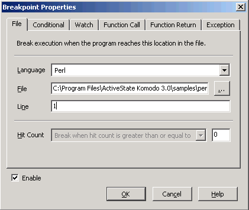
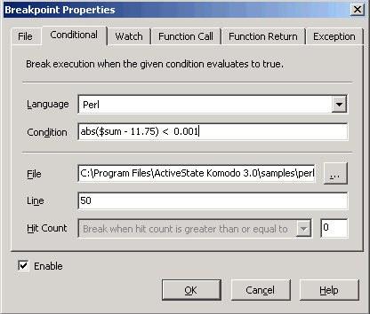
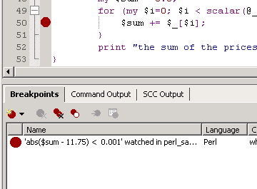
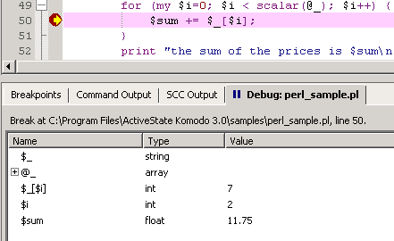

Invoke the Breakpoint Properties dialog box
(Debug|Add\Edit Breakpoint).

On the Conditional tab, configure a
breakpoint as shown. The break will occur on line 50 when the
$sum variable is equal to $11.75.

The breakpoint is displayed on the margin of the program
file, and on the Breakpoints tab.

Run the debugger. Execution pauses on line 50, when the
$sum variable is equal to $11.75.